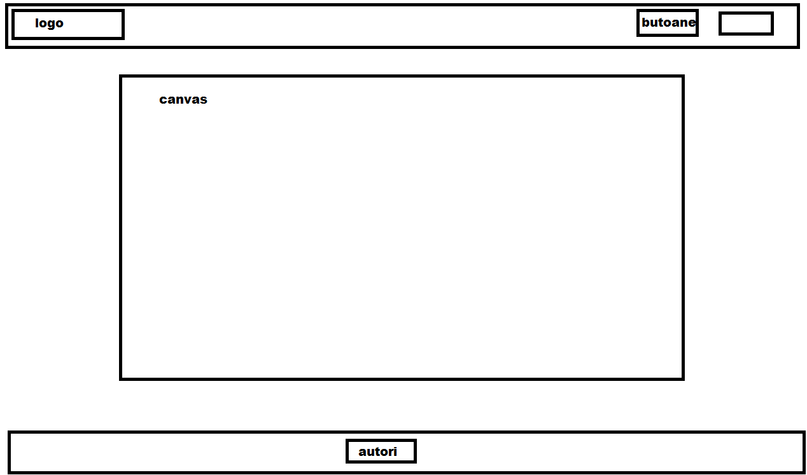

1. Abstract
PAMAF is basicly a pacman game which takes places on the hallways of the faculty of computer scinece Alexandru Ioan Cuza from Iasi.
2. Concept
Before starting to work on the project each of the developers had to come up with an idea of design for the main page and then compare with the other designs and pick one.
Design 1:

Design 2:

A lot of research was done on the technical side of javascript games and taking the w3schools courses the following prototype came out:
(WASD to move)
3. User Interaction
After successfully authenticating with facebook the user will find himself in the
bidimensional hallways of the body C wandering through
multiple laboratories while being chased by teachers trying to take his soul.
Whenever the user feels lost in the commands or has a sudden need to know more about the game and it's creators
he can quickly pause the game and check one of the sections "help" or "about" available in the header without losing the progress.
4. Version Control
The project is stored on GitHub and the version control is done via GitHub Desktop.
For the moment the work is done straight on the master branch as the given tasks were not
complex enough to require multiple branches.